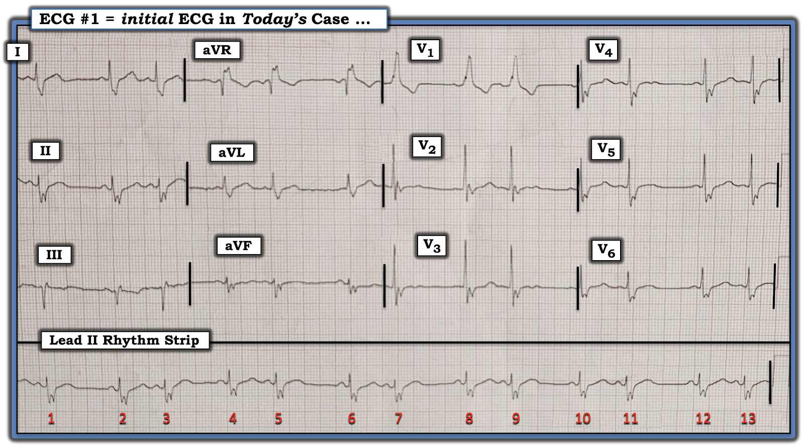
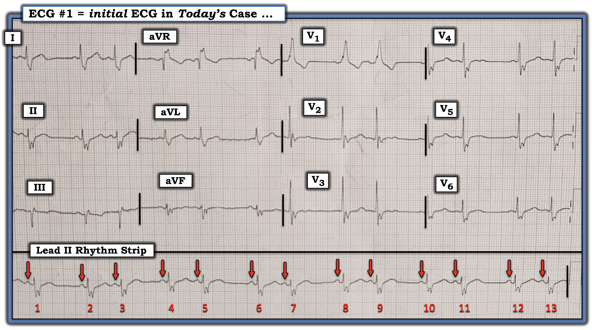
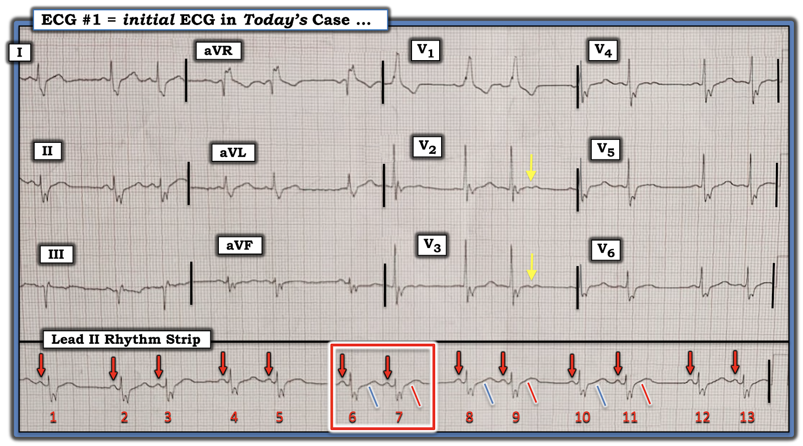

ECG Blog #429 — Mobitz I hay Mobitz II?
Điện tâm đồ 12 chuyển đạo và dải nhịp chuyển đạo II dài ở Hình 1 — được ghi ở một người đàn ông lớn tuổi gần đây có tiền sử “dễ mệt mỏi” và một cơn tiền ngất.
CÂU HỎI:
- BẠN sẽ đọc điện tâm đồ ở Hình 1 như thế nào?
- Nhịp theo nhóm (group beating) là do blốc AV độ 2 loại Mobitz I hay Mobitz II?


SUY NGHĨ Ban đầu CỦA TÔI về CA BỆNH Hôm nay:
Cho rõ ràng, với bệnh sử lâm sàng nêu trên — tôi trình bày những suy nghĩ ban đầu về việc đọc trên lâm sàng điện tâm đồ ban đầu hôm nay theo đúng trình tự tôi đã dùng để đánh giá ca này.
- XIN NHẤN MẠNH: Một trong những mục tiêu của tôi khi xây dựng ECG Blog này — là giúp các bác sĩ lâm sàng tối ưu hóa hiệu quả thời gian. Ví dụ, trong ca hôm nay — tôi đã hoàn tất đánh giá ban đầu bản ghi ở Hình 1 trong chưa đầy 1 phút. Tôi trình bày cách làm của mình dưới đây.
Cách tiếp cận CỦA TÔI:
Khi được đưa một điện tâm đồ 12 chuyển đạo kèm dải nhịp chuyển đạo dài — tôi thích dành vài giây nhanh trước hết để nhìn dải nhịp chuyển đạo dài — trước khi nhìn 12 chuyển đạo. Điều này đặc biệt phù hợp khi có một trong hai tình huống: QRS rộng và/hoặc nhịp không đều (và trong ca hôm nay — cả hai điều kiện này đều có!).
- Theo Cách tiếp cận Ps, Qs, 3R (Xem ECG Blog #185) — nhịp ở dải chuyển đạo II dài của Hình 1 không đều (Regular). Thay vào đó — có một kiểu hình phù hợp với “nhịp theo nhóm” (group beating) (tức là các nhóm 2 nhát — mỗi nhóm có khoảng cách giữa 2 nhát này tương tự nhau — và — khoảng ngưng ngắn giữa các nhóm cũng tương tự nhau).
- Phức bộ QRS ở chuyển đạo II dài có vẻ rộng (tức là hơn nửa ô lớn trên giấy ghi điện tâm đồ — và ở Hình 1, ít nhất 0.12 giây).
- Sóng P có mặt phía trước mỗi nhát trong 13 nhát ở dải nhịp chuyển đạo II dài (các mũi tên ĐỎ ở Hình 2). Các sóng P này đều dương ở chuyển đạo II này — với khoảng PR hằng định và bình thường (tức là mọi sóng P đều liên quan (Related) với QRS gần nhất — vì khoảng PR giữ nguyên trước mọi nhát). Vì vậy, bản ghi hôm nay có nhịp xoang nền.
- Thông số thứ 5 trong Cách tiếp cận Ps,Qs,3R là R thứ 3 = Rate (tần số) — khó xác định do nhịp không đều. Dù vậy — ta có thể nói rằng tần số không quá nhanh.
- XIN NHẤN MẠNH: Đánh giá nhịp hôm nay theo cách tiếp cận trình bày ở các gạch đầu dòng trên chỉ nên mất chưa đầy 30 giây! Kết luận tôi đưa ra (trong vòng 30 giây này) — là nhịp hôm nay biểu hiện dẫn truyền các nhát xoang với tần số tim hợp lý — QRS rộng và nhịp theo nhóm.


================================
ĐIỂM THEN CHỐT (PEARL) #1: Dù nhịp trong ca hôm nay trông thú vị đến đâu (tức là với nhịp theo nhóm và QRS rộng) — tôi đề nghị rằng để đạt hiệu quả thời gian tối ưu cho đánh giá và xử trí lâm sàng — bước tiếp theo nên là tìm hiểu VÌ SAO phức bộ QRS rộng!
- Như đã nêu ở trên — nhịp hôm nay có dẫn truyền xoang, với khoảng PR hằng định và bình thường. Do đó — không có WPW. Điều này có nghĩa là nguyên nhân QRS rộng trong nhịp hôm nay là do một dạng rối loạn dẫn truyền nào đó.
- Như được ôn lại bên dưới trong PHẦN BỔ SUNG hôm nay — chú ý vào 3 chuyển đạo MẤU CHỐT ( = chuyển đạo V1 bên phải — và các chuyển đạo I và V6 bên trái) — cho phép bạn phân biệt 3 dạng rối loạn dẫn truyền chính chỉ trong vài giây!
- Bình thường — QRS chủ yếu âm ở chuyển đạo V1 bên phải. Vì vậy — sự kết hợp giữa phức bộ RR' giãn rộng ở V1 của Hình 2 — cùng với sóng S tận rộng ở các chuyển đạo I và V6 bên trái — có giá trị chẩn đoán RBBB (blốc nhánh phải – Right Bundle Branch Block) là nguyên nhân QRS giãn rộng trong ca hôm nay (Xem ECG Blog #282 để ôn lại chẩn đoán các blốc nhánh (BBB) trên điện tâm đồ).
ĐIỂM THEN CHỐT (PEARL) #2: Video ECG trong PHẦN BỔ SUNG hôm nay cũng ôn lại cách đánh giá nhanh thay đổi ST-T trong blốc nhánh. Quy tắc đơn giản có thể đánh giá trong vài giây là: với RBBB hoặc LBBB — sóng ST-T ở 3 chuyển đạo MẤU CHỐT (I, V1, V6) sẽ hướng ngược chiều với hướng của sóng cuối cùng của QRS ở 3 chuyển đạo này.
- Vì sóng cuối cùng của QRS ở V1 trong Hình 2 dương (tức là sóng R' ) — sóng ST-T ở chuyển đạo này phải âm. Đúng vậy.
- Vì sóng cuối cùng của QRS ở các chuyển đạo bên I và V6 là sóng S âm — sóng T ở các chuyển đạo này phải dương. Đúng vậy.
- Nhìn tiếp các chuyển đạo lân cận trong Hình 2 — dường như không có thay đổi ST-T cấp.
Tiếp theo — Xem kỹ hơn Nhịp ...
================================
ĐIỂM THEN CHỐT (PEARL) #3: Bất chấp tiêu đề bài blog hôm nay (là "Mobitz I hay Mobitz II?" ) — chỉ cần nhìn thoáng qua ta đã biết nhịp hôm nay không phải là bất kỳ dạng blốc AV nào — vì tần số nhĩ không đều!
- Dùng compa đo (calipers) giúp đẩy nhanh quá trình này rất nhiều. Với blốc AV độ 2 hoặc độ 3 — tần số nhĩ phải đều (hoặc ít nhất gần như đều — nếu có loạn nhịp xoang nền) — nhưng từ thời điểm của các mũi tên ĐỎ ở Hình 2, rõ ràng là không có sóng P đúng lúc nào xuất hiện giữa các nhát #1-2; #3-4; #5-6; #7-8; #9-10; #11-12.
- Để cho đầy đủ, tôi xin lưu ý rằng blốc SA có thể tạo ra kiểu nhịp đôi (bigeminal) như ta thấy ở Hình 2 . Dù vậy, như đã nhấn mạnh trong ECG Blog #312 — blốc SA rất hiếm! Tôi có thể đếm trên đầu ngón tay ngón chân số lần tôi gặp blốc SA thực sự qua hàng chục năm miệt mài tìm kiếm rối loạn nhịp này.
- Thay vào đó, như gợi ý ở PEARL #4 — có một lời giải thích phổ biến hơn nhiều cho rối loạn nhịp hôm nay mà ta nên tìm trước tiên!
ĐIỂM THEN CHỐT (PEARL) #4: Có lẽ câu thần chú tôi yêu thích nhất khi đọc rối loạn nhịp là câu sau mà tôi học được từ Marriott: "Nguyên nhân thường gặp nhất của một khoảng ngưng là PAC bị blốc."
- Trong thực hành lâm sàng, khi gặp một "khoảng ngưng" trong nhịp — phát hiện PAC bị blốc thường gặp hơn nhiều so với bất kỳ dạng blốc AV nào.
- Xin nhấn mạnh rằng khi nói "khoảng ngưng" — tôi muốn nói bất kỳ khoảng nào dù chỉ hơi dài hơn dự kiến, điều rõ ràng có ở Hình 2 — vì khoảng giữa các nhóm 2 nhát dài hơn nhiều so với dự kiến, xét theo khoảng P-P giữa các sóng P xoang có mũi tên ĐỎ trong bản ghi này.
- Do đó, ngay khi thấy nhịp đôi trong ca hôm nay (tức là với các khoảng ngưng ngắn giữa mỗi nhóm 2 nhát) — tôi đã nghĩ tới khả năng PAC bị blốc.
================================
Bây giờ — hãy NHÌN lại Hình 2.
- Hãy cẩn thận quan sát sóng ST-T của mọi nhát mang số lẻ trong Hình 2 — và so sánh các sóng ST-T này với sóng ST-T của từng nhát mang số chẵn.
- Có bất kỳ khác biệt nào không?
================================
Tôi minh họa CÂU TRẢ LỜI của mình ở Hình 3:


Giải thích Hình 3:
Thách thức khi tìm PAC bị blốc — là phân biệt những khác biệt tinh tế ở sóng ST-T là "thật" với nhiễu với những biến đổi nhẹ có thể thấy bình thường ở một số đoạn của bản ghi.
- Chẳng phải sóng ST-T của mọi nhát mang số chẵn trong Hình 3 thẳng hơn (phía trên các đường nghiêng XANH LAM) — so với sóng ST-T của mọi nhát mang số lẻ (phía trên các đường nghiêng ĐỎ)? Đó là vì có một PAC không dẫn truyền ẩn trong sóng ST-T của mọi nhát mang số lẻ — và chính điều này gây ra biến dạng nhẹ-nhưng-thật của đoạn ST! Các PAC bị blốc này có tác dụng "cài đặt lại" nút SA — và do đó tạo ra khoảng ngưng ngắn mà ta thấy giữa mỗi nhóm 2 nhát!
- ĐIỂM THEN CHỐT (PEARL) #5: Điều quan trọng là cần hiểu rằng các PAC xuất phát từ vị trí gần nút SA có thể có hình dạng tương tự sóng P xoang. Vì lý do này — tôi luôn nhìn vào các chuyển đạo ghi đồng thời để tìm những khác biệt tinh tế về hình dạng sóng P mà có thể không dễ thấy trên một dải nhịp chuyển đạo dài đơn lẻ. LƯU Ý: Các mũi tên VÀNG ở Hình 3 cho thấy khác biệt về hình dạng ST-T giữa các nhát dẫn truyền từ xoang và các nhát có PAC bị blốc dễ thấy nhất ở V2 và V3.
================================
Bài học tôi rút ra từ lâu ...
- Như đã nhấn mạnh ở PEARL #4: Nguyên nhân thường gặp nhất của một khoảng ngưng là PAC bị blốc. PAC bị blốc thường gặp hơn nhiều so với bất kỳ dạng blốc AV nào.
- Cho đến khi tôi nhận thức được rằng PAC bị blốc là nguyên nhân thường gặp nhất của khoảng ngưng — tôi chưa bao giờ thấy PAC bị blốc.
- Khi tôi bắt đầu tìm PAC bị blốc — tôi thấy chúng ở khắp nơi!
- Hãy nhớ rằng thách thức lớn nhất để chẩn đoán chính xác PAC bị blốc — là phân biệt những khác biệt ở sóng ST-T là "thật" với nhiễu với những biến đổi nhẹ có thể thấy bình thường ở một số đoạn của bản ghi.
- Điểm MẤU CHỐT: Trong ca hôm nay — lý do tôi biết khác biệt về hình dạng ST-T giữa các nhát mang số lẻ và chẵn là thật — là vì nó xuất hiện ở mọi nhát trong dải nhịp chuyển đạo dài ở Hình 3.
==================================
Lời cảm ơn: Xin cảm ơn Hafiz Abdul Mannan Shahid (Lahore, Pakistan) đã chia sẻ ca bệnh và các bản ghi này.
==================================
Các bài ECG Blog liên quan đến ca hôm nay:
- ECG Blog #185 — Ôn lại Cách tiếp cận Ps, Qs và 3R để đọc nhịp có hệ thống.
- ECG Blog #232 — Ôn lại các nguyên nhân gây nhịp đôi (Bigeminy).
- ECG Blog #164 — Ôn lại một ca blốc AV độ 2 Mobitz I, kèm bàn luận chi tiết về "Dấu chân" của Wenckebach.
- ECG Blog #252 — một ca tương tự ca hôm nay (kèm ĐƯỜNG DẪN tới thêm nhiều ví dụ về PAC bị blốc).
==================================
PHẦN BỔ SUNG (11/5/2024): Tôi đã bổ sung bên dưới tài liệu về một cách tiếp cận dễ dùng để chẩn đoán các blốc nhánh trên điện tâm đồ
=======================================

ECG Media Pearl #22 (13:15 phút Video) — Ôn lại một cách tiếp cận dễ dùng cho phép chẩn đoán các blốc nhánh (Bundle Branch Blocks) trong chưa đầy 5 giây.
=======================================
- BẤM VÀO ĐÂY — để tải MIỄN PHÍ PDF của tệp 26 trang này về BBB (trích từ ECG-2014-ePub của tôi) — ôn lại Những điều cơ bản để chẩn đoán các blốc nhánh (bao gồm chẩn đoán MI cấp & LVH khi có BBB) trên điện tâm đồ.
=======================================